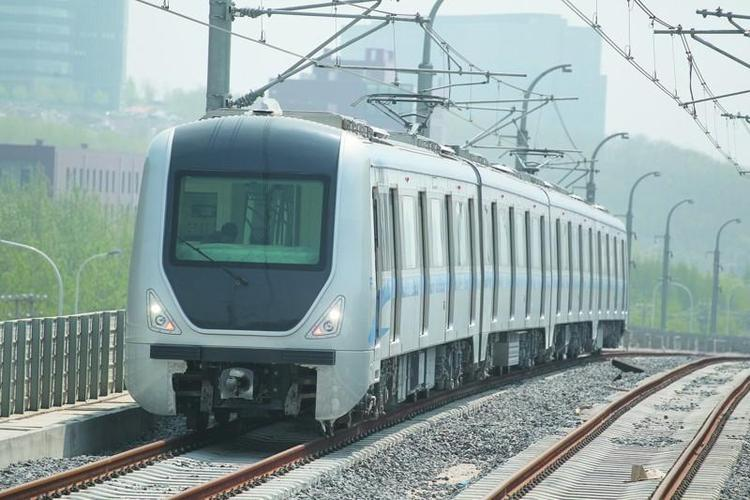
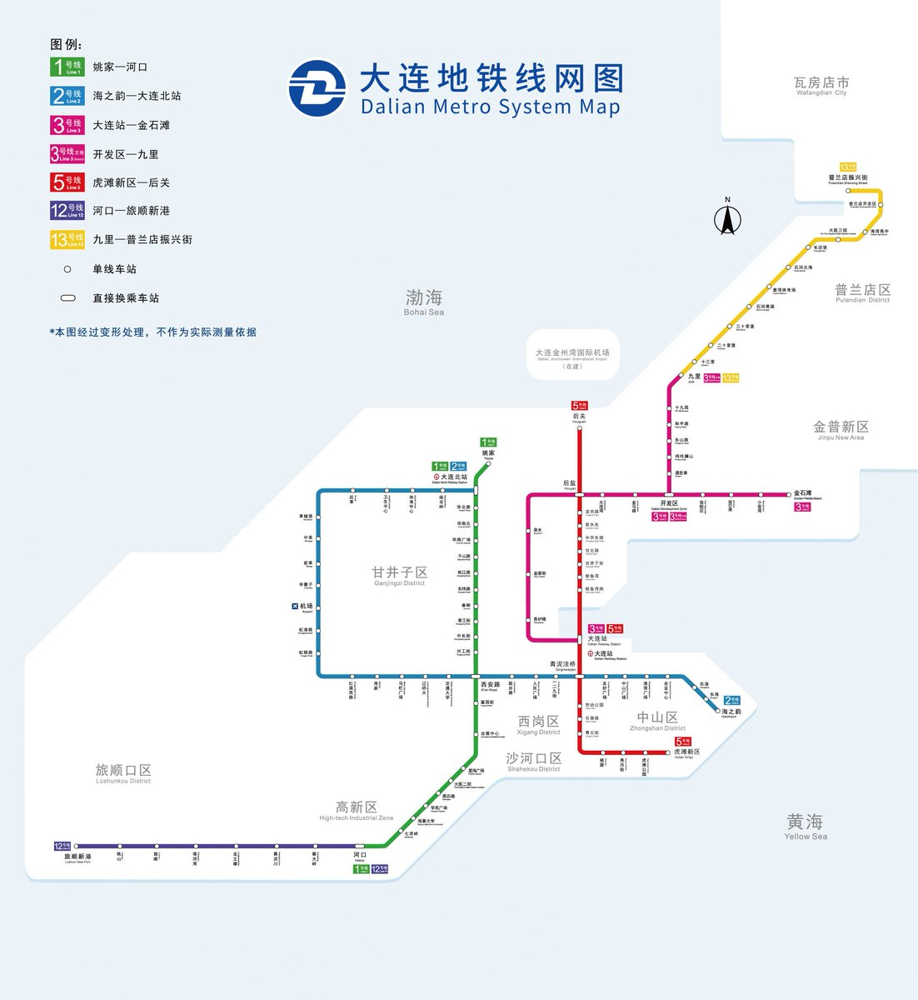

这个东西能说勉强理解吧，不管是1号线和12号线没贯通的问题，还有2号线和3号线连不上问题，还有202电车和1号线过于重复的问题，其实我觉得都是规划的短视，没有提前做任何的预留，3号线是03至04年以快轨的形式修建，全线地上，12号线是14年按照电车延伸线的形式建设，实际上类似轻轨，也是全线地上



大连地铁1号线和12号线如果可以贯通运行就更好了，蔡大岭站和黄泥川站很多企业和学校入驻导致交通压力增加不少，河口站作为换乘站不堪重负，高峰期的换乘经常会需要狂奔抢行才能上车，比较缺乏秩序，12号线是4B车，线路较长，车隔也比较大，因此运力有限，也更加造成了这样的结果 https://t.co/rLTRQUuK0R